ECS Fargate 初体验
Nov 19, 2019
0x00 前言
对标K8S，ECS就是AWS上做docker集群管理用的。ECS Fargate就是托管的，我不需要登上实例管理了。这里搞个简单的demo测试一下。
0x01 准备工作
用的cn-northwest-1的ECS。
- 先创建一个集群
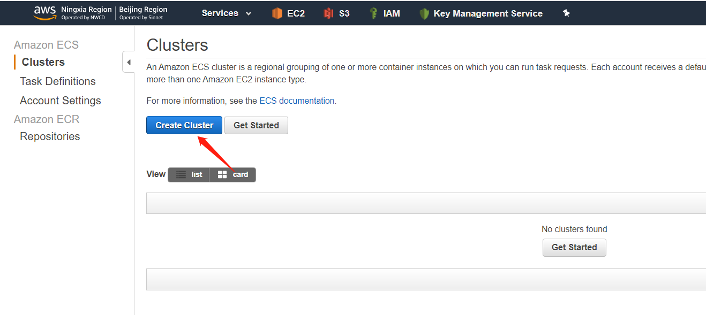
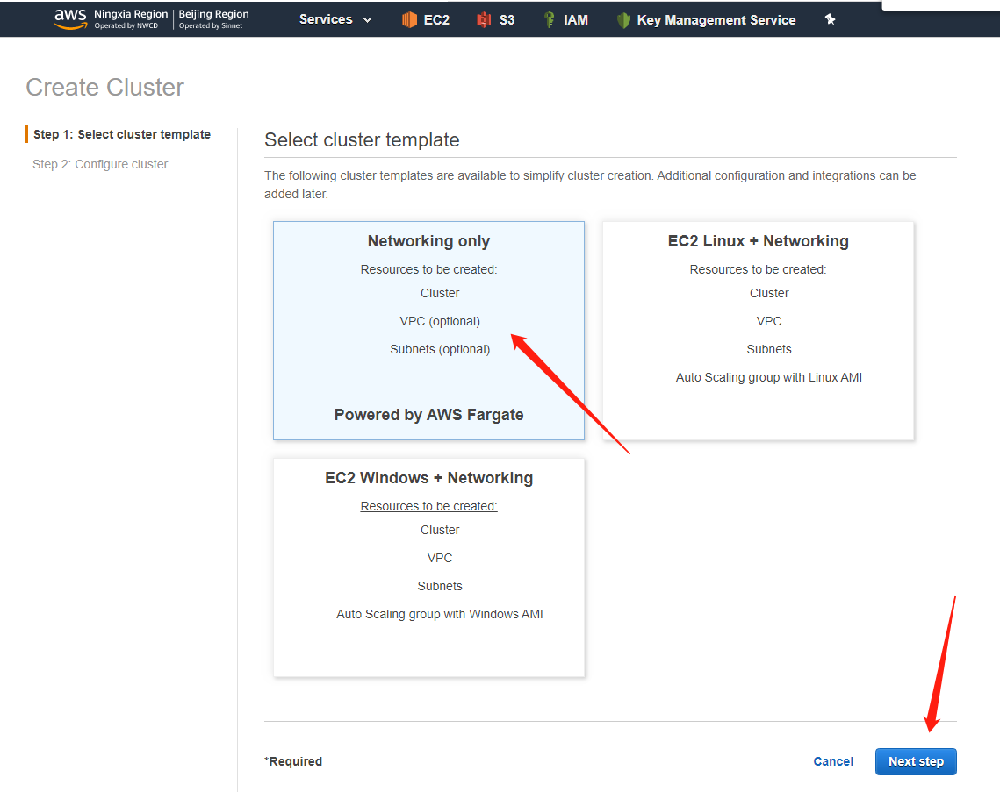
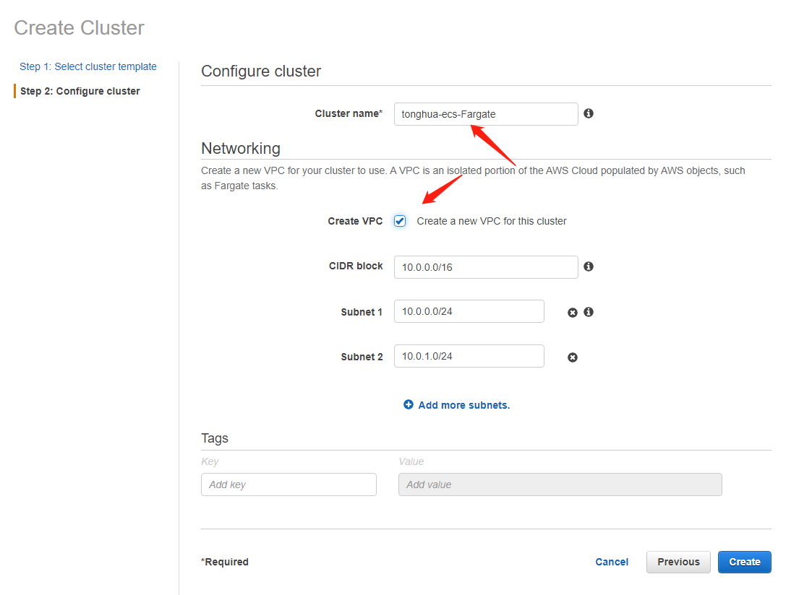
稍等片刻，集群就创建完了
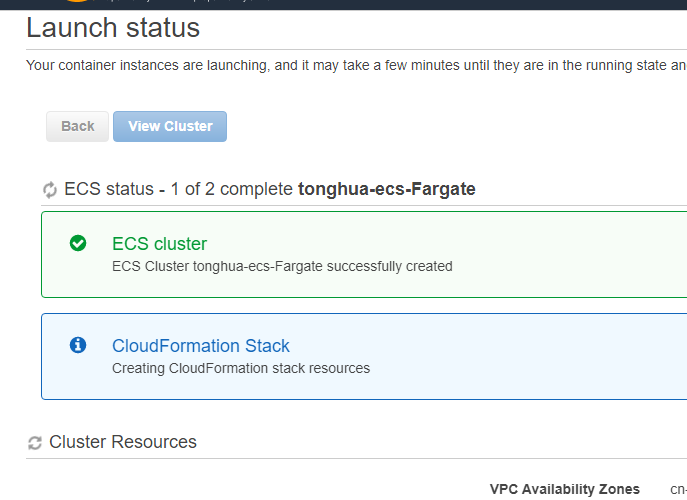
- 然后再搞个ECR仓库用来装docker镜像
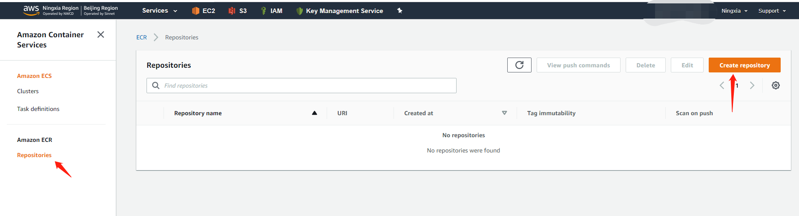
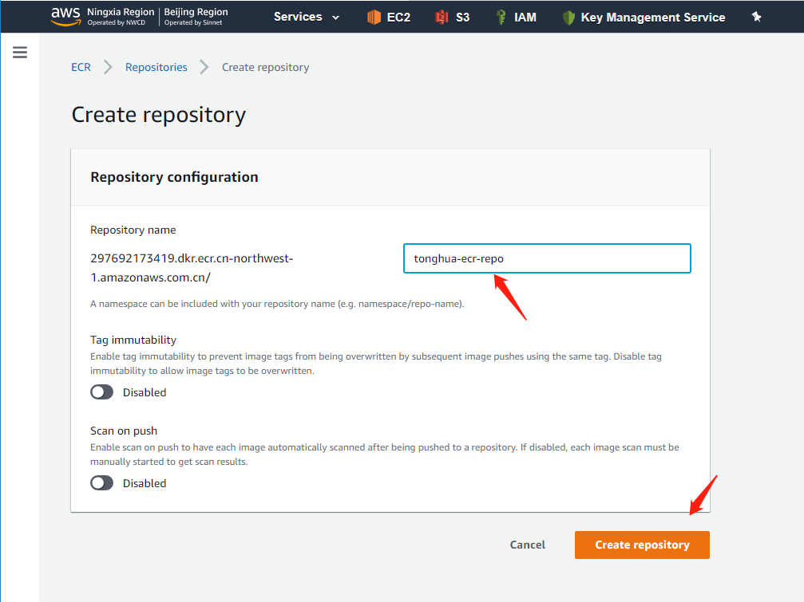
- 仓库创建完了之后，回到EC2实例上，把dockerhub上的镜像拖回来搞到ECR上
1
2
3
4
5
6[root@ip-10-0-0-64 ec2-user]# docker pull nginx
Using default tag: latest
latest: Pulling from library/nginx
Digest: sha256:922c815aa4df050d4df476e92daed4231f466acc8ee90e0e774951b0fd7195a4
Status: Image is up to date for nginx:latest
[root@ip-10-0-0-64 ec2-user]#
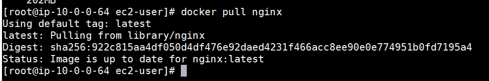
1 | [root@ip-10-0-0-64 ec2-user]# $(aws ecr get-login --no-include-email --region cn-northwest-1) |
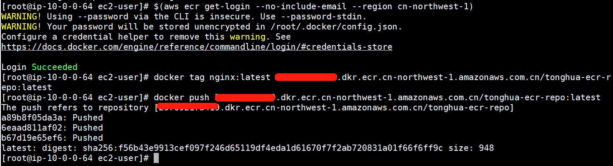
可以看到已经传成功了：
0x02 创建服务
前面准备工作就算做完了，这头我就继续拿着传上来的镜像部署服务了。
- 创建任务定义
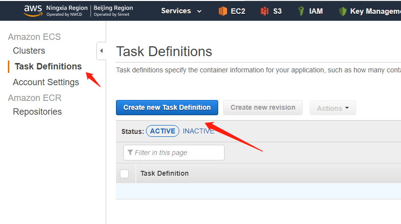
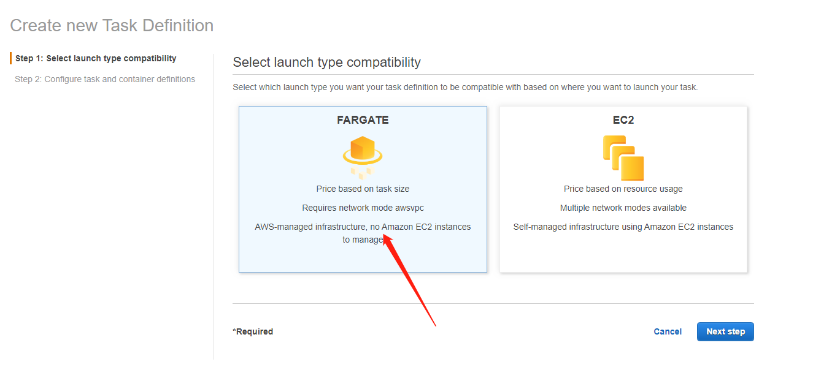
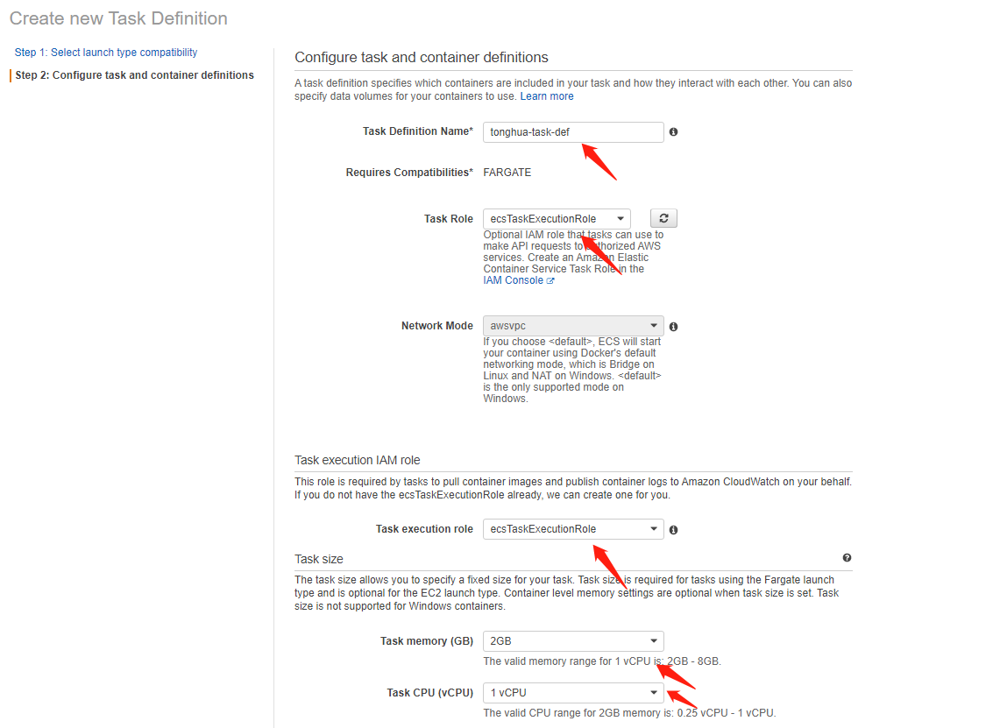
别的都用默认值，然后再增加下容器。
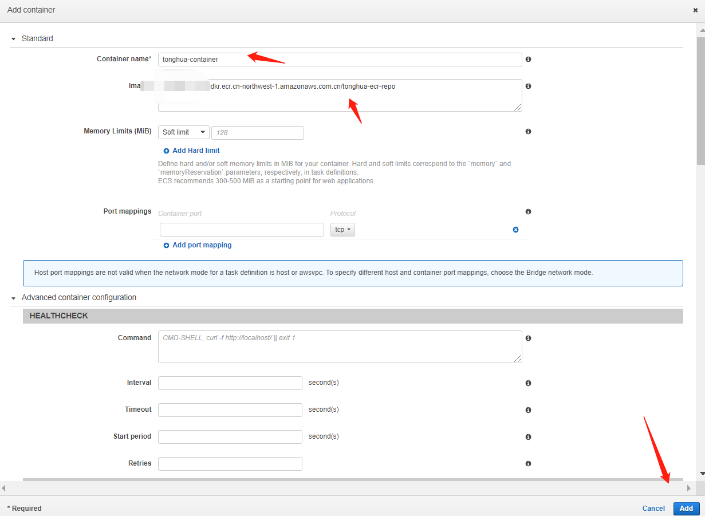
可以看到，任务定义已经创建成功了，
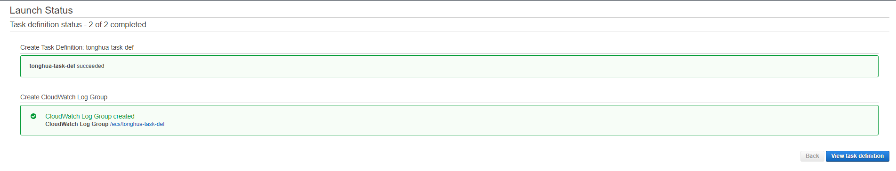
- 然后进到一个集群里头创建一个服务试试：
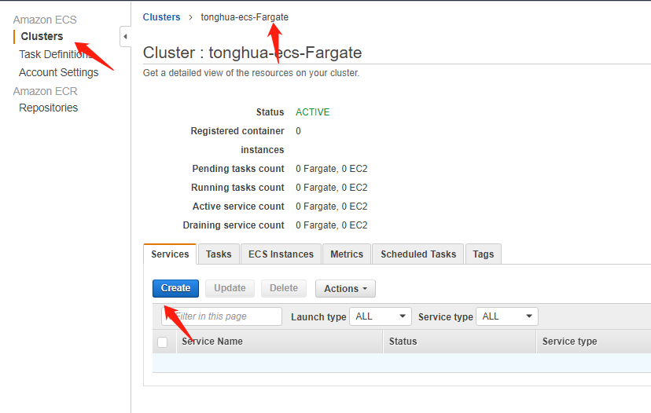
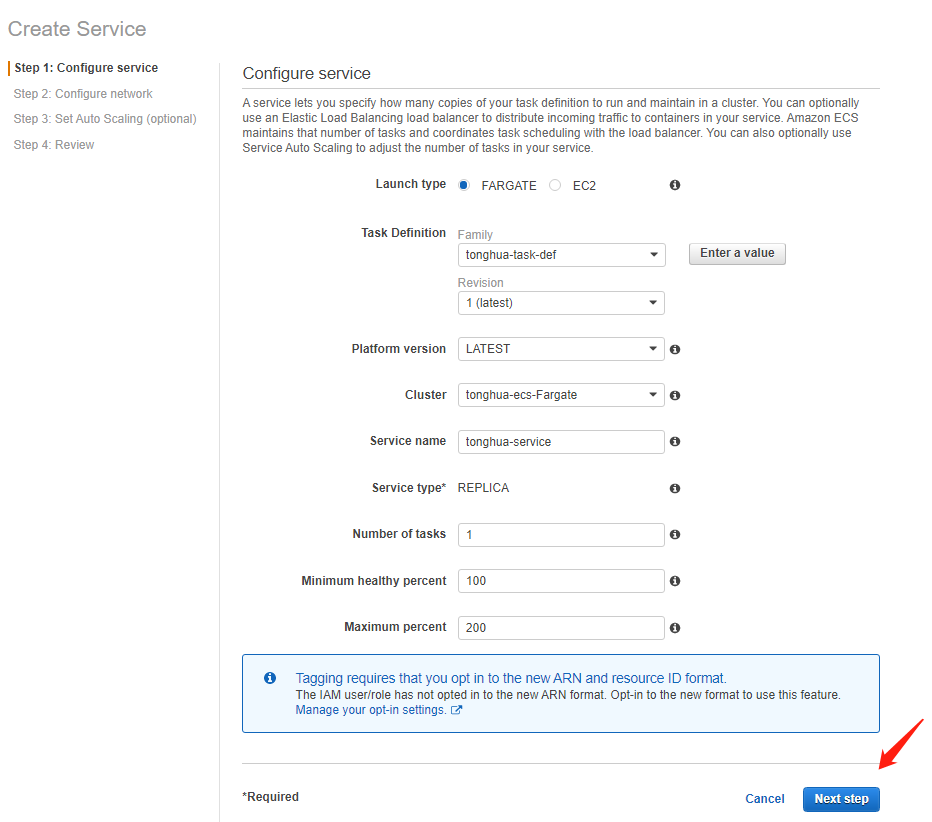
emm，刚才创建的任务定义忘了映射端口了，重新创建一个把docker容器的80端口映射出来。
然后还需要创建一个ALB，部署在ECS前端。
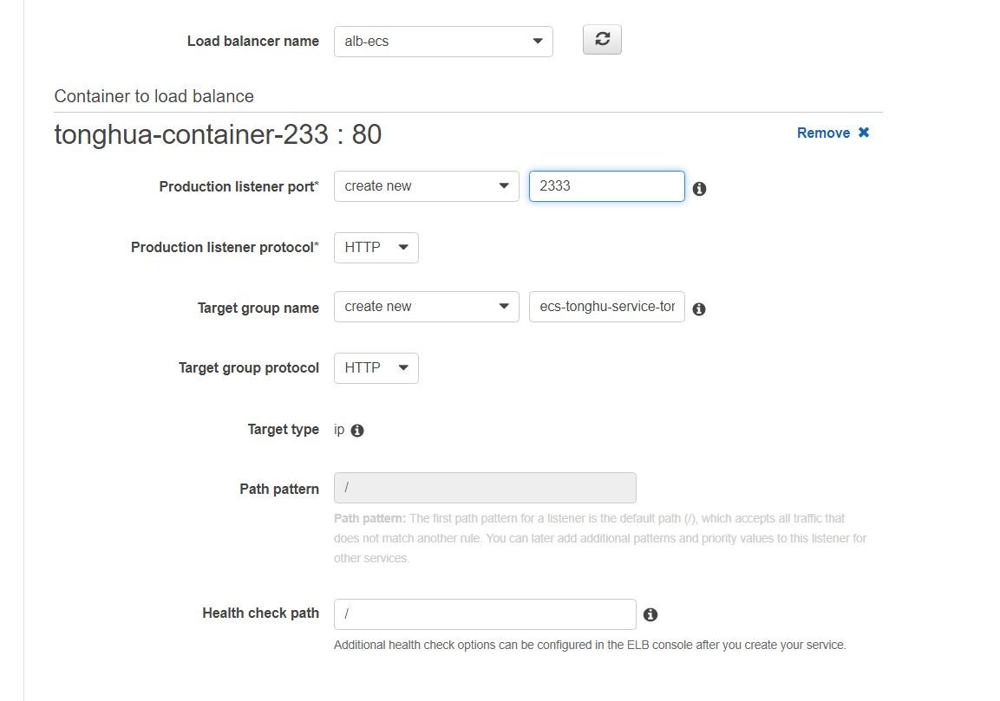
继续下一步：
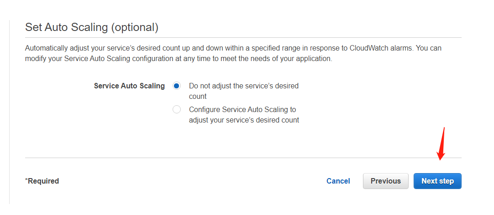
然后等着启动就行了：
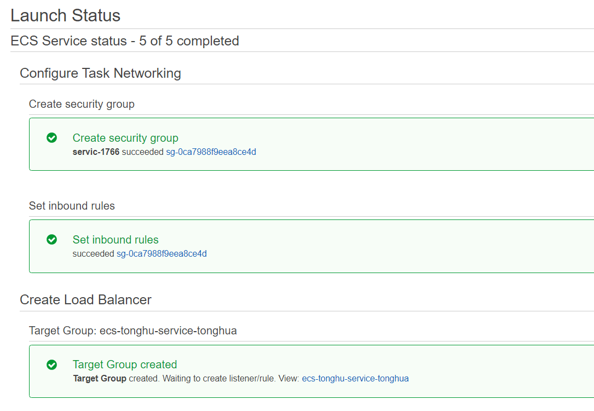
可以看到，都成了。
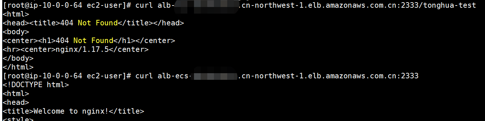
0x03 troubleshooting
一般都是看【服务】的【事件】，【任务】的【log】，具体情况具体看吧。
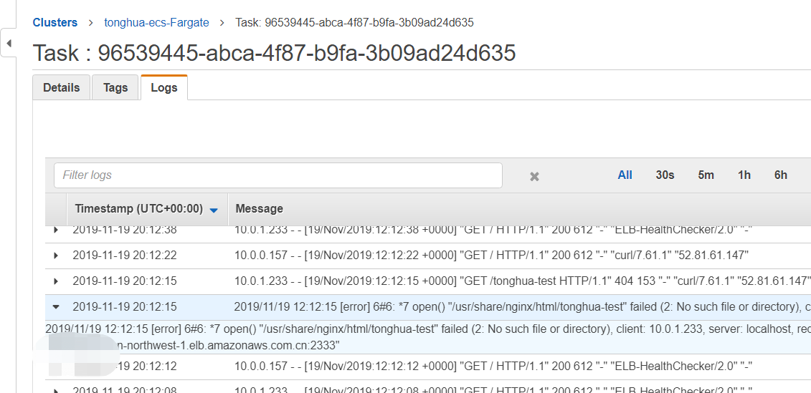
0x04 后记
简单记录下，文档看的云里雾里，还是动手一把梭来的快一点。